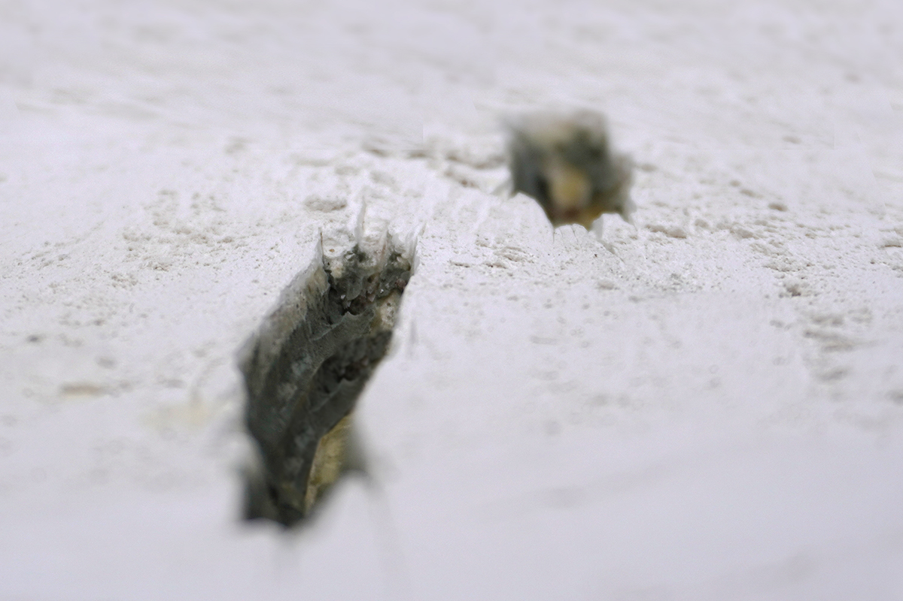
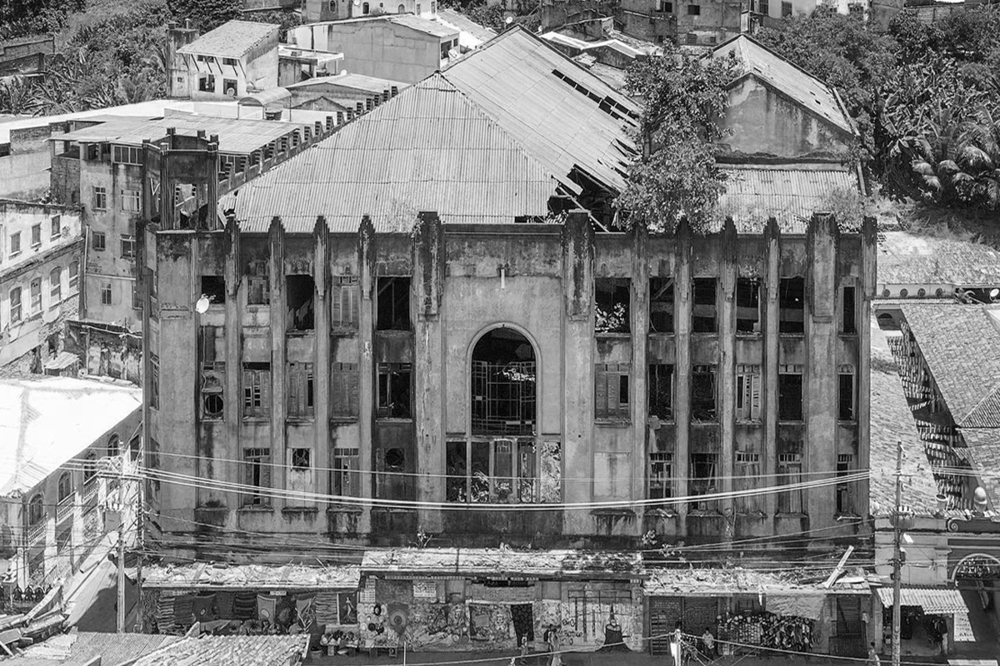
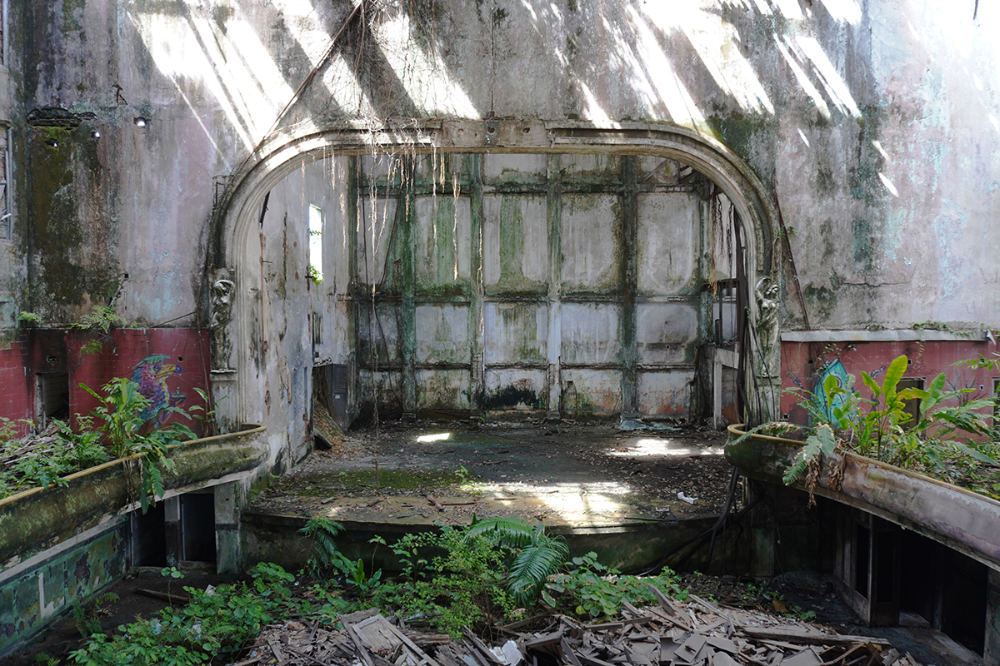
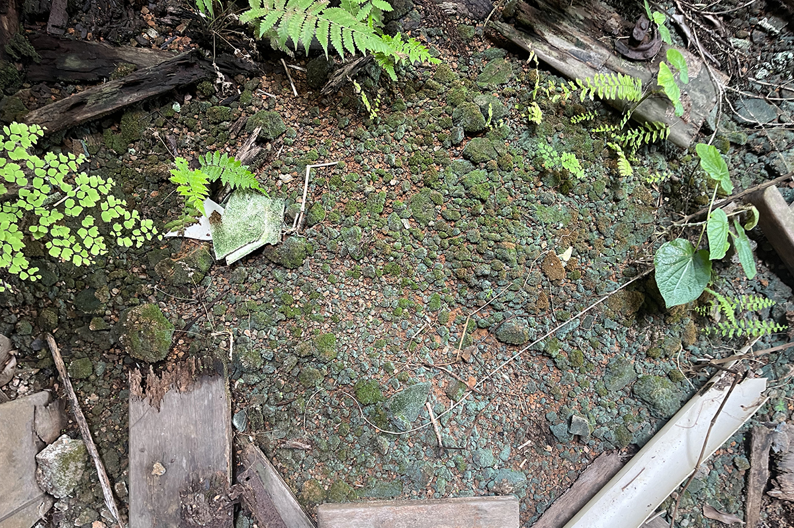
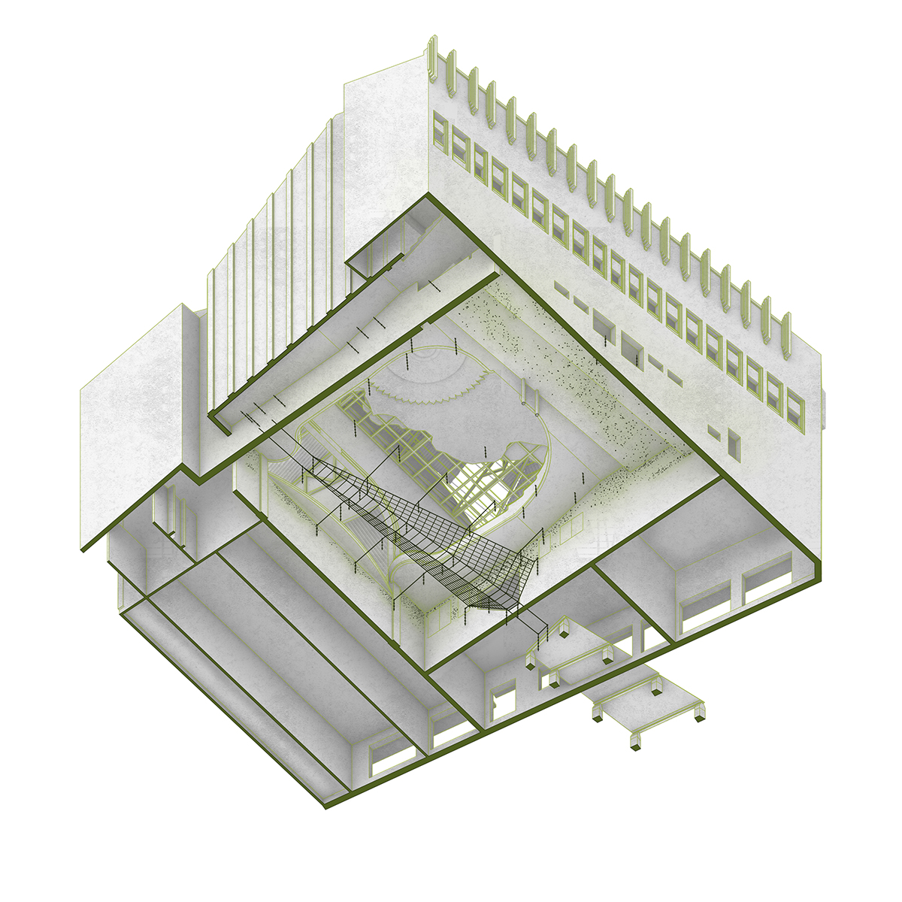
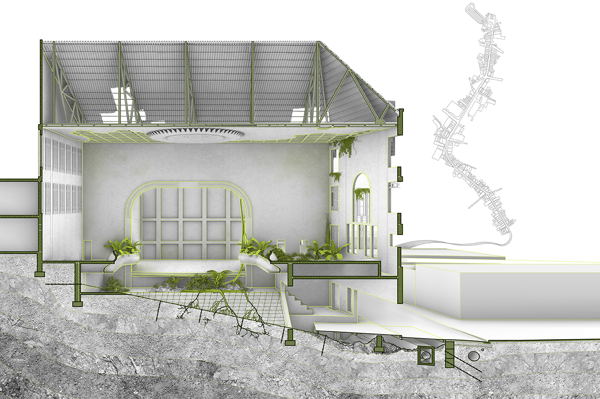
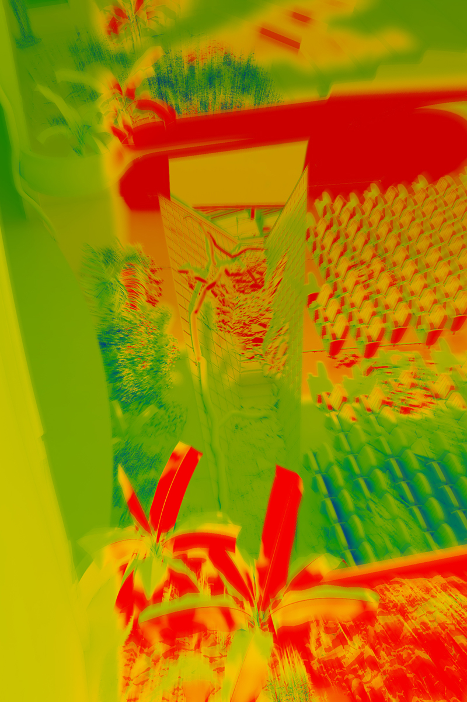
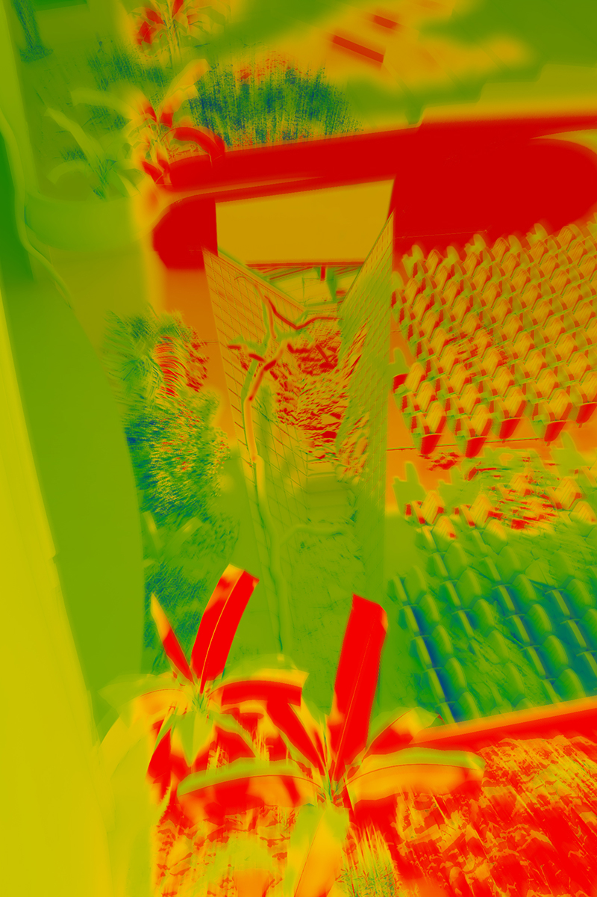
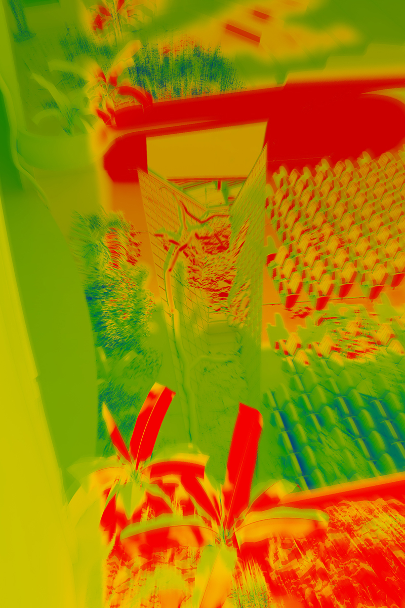

Garden 1.
Evening lark
A garden inside of an art deco theater in Salvador, Brazil undergoing an advanced state of material and architectural decay. The theater is a zone of the future which has already happened, in which vegetal and cerebral, bacterial and architectural, native and traveler, and past, present, and future enter into new relations, facilitated by the decay of its abandoned interior. A vocabulary of cuts stages an encounter and an infection between this zone and the infrastructure of the former Rio das Tripas, buried beneath the avenue outside.
Salvador, Brazil, 2024
Columbia University Graduate School of Architecture, Planning and Preservation
Master of Architecture Design Studio VI
Critic: Mario Gooden
Key Dimensions: 2,480 square feet





 



